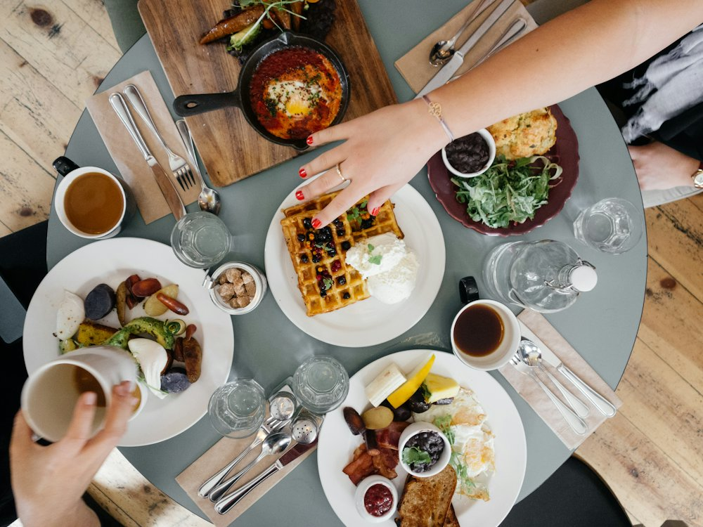

Arabica city cafe
Кофейня · Кофе, завтраки · Алматы
Рейтинг 2ГИС
★ 4.8
2 114 оценок
Год открытия
нет данных
в открытых источниках не нашли
Средний чек
4 500 ₸
по данным 2ГИС
Адрес и часы
📍 ул. Наурызбай батыра, 127 блок 1, Алматы · Бостандыкский район
🕒 часы работы уточняются — смотрите в 2ГИС
О заведении
Городское кафе.
Меню
Рядом в справочнике
All Saints · Ami · Amici · Arabica Coffee House · Aspandiyar · Ata Doner